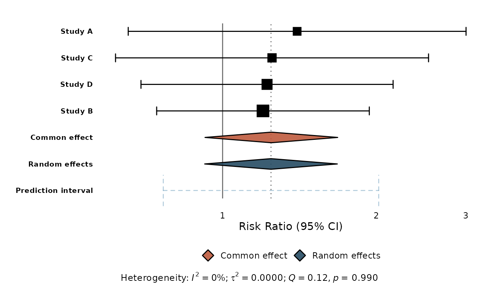
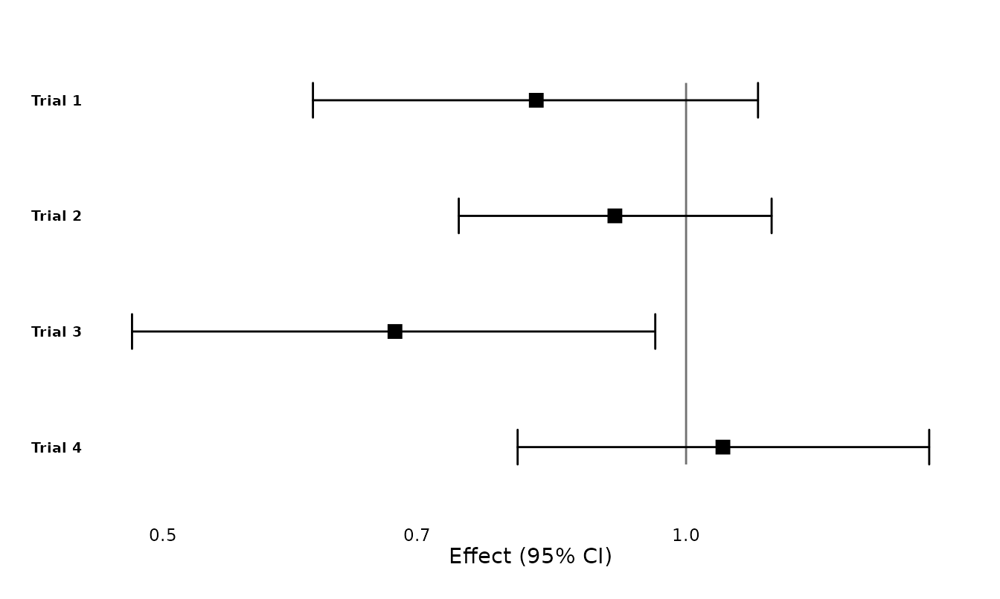
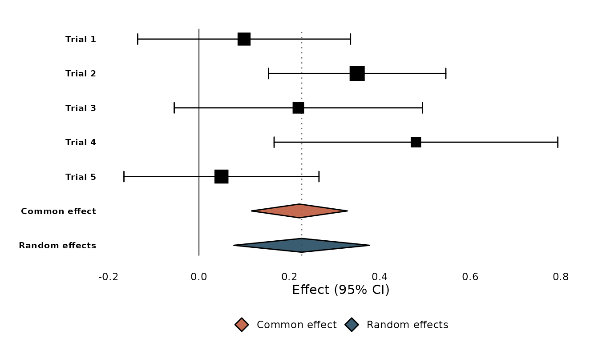
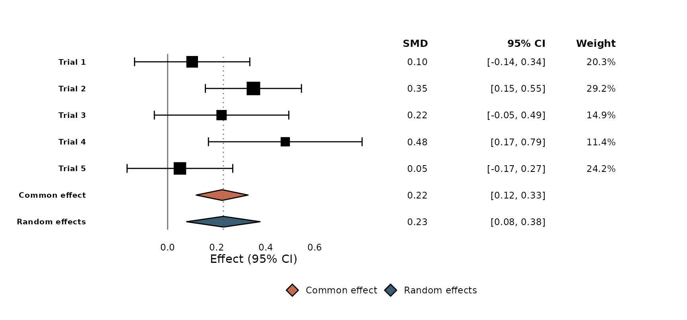
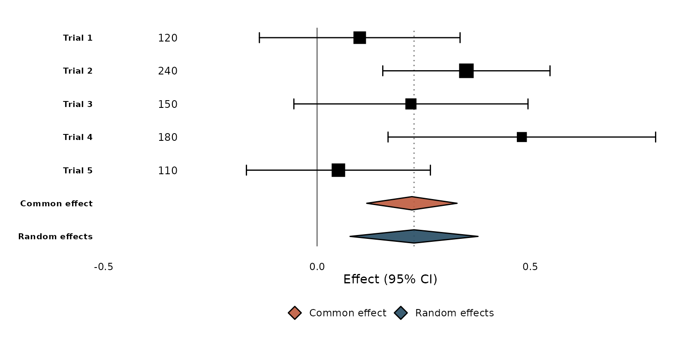
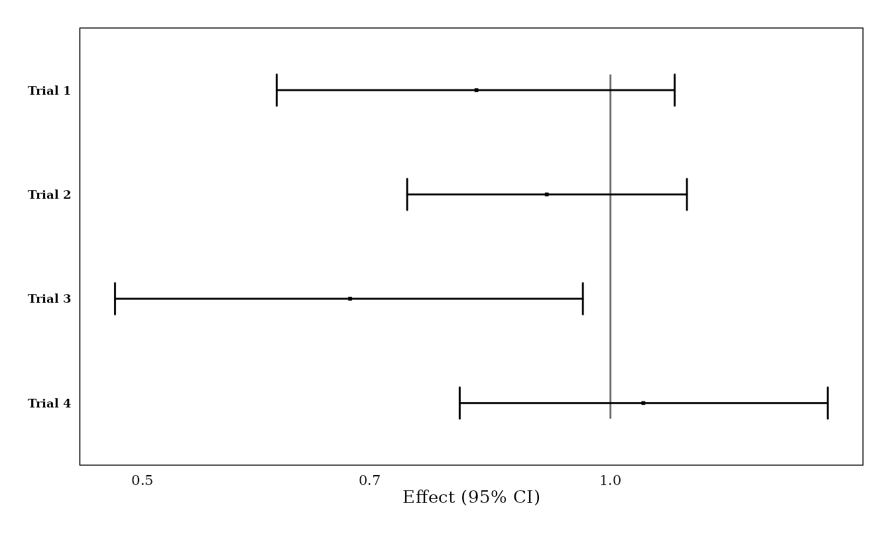
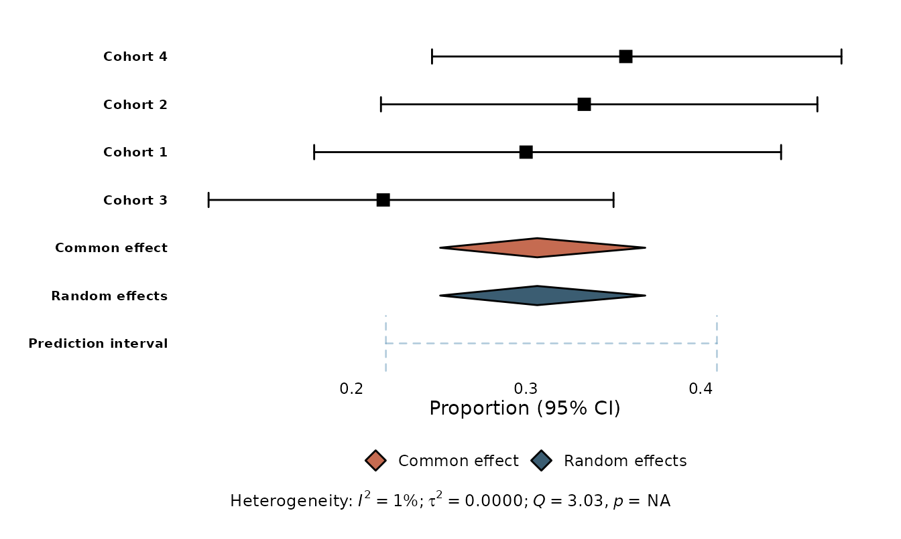

ggmeta turns a meta-analysis into a publication-quality forest plot built on ggplot2. It works two ways:
- on a
metaobject (from the meta package), or - on a plain tidy data frame — no
metapackage required.
Because the result is an ordinary ggplot, you keep the
full ggplot2 toolbox: themes, scales, annotations, and saving with
ggsave().
A forest plot from a meta object
Fit a meta-analysis as usual, then hand it to
ggforest():
library(meta)
#> Loading required package: metabook
#> Loading 'meta' package (version 8.5-0).
#> Type 'help(meta)' for a brief overview.
m <- metabin(
event.e = c(14, 30, 15, 22), n.e = c(100, 150, 100, 120),
event.c = c(10, 25, 12, 18), n.c = c(100, 150, 100, 120),
studlab = c("Study A", "Study B", "Study C", "Study D"),
sm = "RR"
)
ggforest(m)
ggforest() does the sensible thing automatically: it
draws study confidence intervals with weight-proportional squares, the
common- and random-effects summary diamonds, a prediction interval, a
null-effect reference line, a log x-axis for ratio measures, and a
heterogeneity caption.
Standalone: a tidy data frame
You don’t need the meta package. Any data frame with
studlab, estimate, ci_lower, and
ci_upper works:
df <- data.frame(
studlab = c("Trial 1", "Trial 2", "Trial 3", "Trial 4"),
estimate = c(0.82, 0.91, 0.68, 1.05),
ci_lower = c(0.61, 0.74, 0.48, 0.80),
ci_upper = c(1.10, 1.12, 0.96, 1.38)
)
ggforest(df, null_effect = 1)
On-the-fly meta-analysis
Give ggforest() a se column (or let it
recover the standard error from the confidence interval) and set
add_summary = TRUE to pool the studies with an
inverse-variance common-effect and a DerSimonian–Laird random-effects
model — without the meta package:
studies <- data.frame(
studlab = c("Trial 1", "Trial 2", "Trial 3", "Trial 4", "Trial 5"),
estimate = c(0.10, 0.35, 0.22, 0.48, 0.05),
se = c(0.12, 0.10, 0.14, 0.16, 0.11)
)
studies$ci_lower <- studies$estimate - 1.96 * studies$se
studies$ci_upper <- studies$estimate + 1.96 * studies$se
ggforest(studies, add_summary = TRUE)
A meta::forest()-style column table
Set columns = TRUE to add the familiar effect / 95% CI /
weight columns with headers to the right of the plot (use
effect_header to name the estimate column, and pass a
subset like columns = c("estimate", "ci") if you
prefer):
ggforest(studies, add_summary = TRUE, columns = TRUE, effect_header = "SMD")
Custom text columns
For a column of your own — sample sizes, events, anything — use
geom_forest_text(), which aligns to the study rows through
the shared y. format_effect() builds an
“estimate (CI)” label. Widen the panel with expand_limits()
to make room:
studies$n <- c(120, 240, 150, 180, 110)
ggforest(studies, add_summary = TRUE) +
geom_forest_text(aes(y = studlab, label = n), data = studies,
x = -0.35, hjust = 0.5) +
expand_limits(x = -0.45)
Journal styles
Layout presets adapt a plot to common journal conventions. They are
ordinary ggplot2 components, so you add them with +:
p <- ggforest(df, null_effect = 1)
layout_jama(p)
layout_bmj() and layout_revman5() are also
available, and because the plot is a ggplot you can keep
customising with theme(), labs(), and
friends.
Other effect measures
ggforest() back-transforms every summary measure
correctly — exponentiation for ratios, inverse-logit for logit
proportions, Fisher’s z for correlations, and so on.
Single-group proportions and rates get no (meaningless) reference
line:
prop <- metaprop(
event = c(15, 20, 12, 25), n = c(50, 60, 55, 70),
studlab = paste("Cohort", 1:4), sm = "PLOGIT"
)
ggforest(prop)
Saving
ggforest() returns a ggplot, so save it
like any other:
Where to next
See vignette("from-meta-forest") for a side-by-side
comparison with meta::forest() and tips on reproducing its
output.